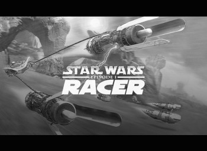

-
DLC's Top 25 List
I promised you a list, so here we go! Games will be chosen at random to play on stream, and we may not play through every game, as some of them are quite long. For those that we cut short, I will be doing some fun challenges or even viewer requests in each game, which I'm sure will be fun. We're also going to be doing some randomizing and maybe even some attempts at speedrunning throughout the course of this list! For each game we complete, the image will be darkened so you can keep track at home. Without any further ado, here's the list in numerical order starting with number 1!
-

01: Mass Effect Trilogy
X360/PC
I've said it before and I'll say it again and I'll keep on saying it - the Mass Effect Trilogy is my favorite series on the Citadel. A mix of romance, intrigue, shooting, spacefaring, and sometimes some silly humor, the Mass Effect series transformed the way I looked at gaming and what I held most dear about video games in general. I laughed and cried with this series, and will continue to do so. For many reasons, we'll be holding off on playing Mass Effect until the Legendary Edition drops, but I can't wait to share my favorite games with you.
-
02: Landstalker: The Treasures of King Nole
GEN
Landstalker was one of those weird games that I got as a kid that I never knew I'd be into, but it shines like a diamond for me. This is something of an RPG-lite game full of puzzles and treasures and plenty of bad guys to slice and dice, all in an isometric view, which for me was incredibly unique. This game predated any knowledge I had of The Legend of Zelda, and therefore has to take the number two spot on the list - Nigel and Friday made it here first.
-

03: The Legend of Zelda - Ocarina of Time
N64/3DS
How could anyone possibly choose just ONE of the Zelda games to go on a top games list? My first instinct was to put Link's Awakening on this list, and it's definitely near and dear to my heart considering I played it JUST before I got a copy of Ocarina of Time, but this was the first 3D Zelda game I got my hands on as a kid, and I loved it. This game has held up over the years, seeing new life in the form of randomizers and speedruns, and it's fascinating to watch every single time - except when I try it, which is the entire reason it's on this list!
-

04: Rogue Squadron Series
N64/GC
The first of several Star Wars games on this list, the Rogue Squadron series was such a fun set of games spanning two different consoles, both of which I had growing up. I got the original cartridge with my N64 for a birthday, and I was overjoyed that my first experience with the N64 was being able to fly through some of my favorite locations in my favorite ships. The series just got better in the sequel, and while the third game suffers a bit, this series still holds up.
-
05: Seven Kingdoms 2 - The Fryhtan Wars
PC
Okay, bear with me here. When I was growing up, we had a PC from pretty early on, but I didn't have very many games for it, other than demo discs and other smaller games I was able to persuade my mother to buy. Seven Kingdoms 2 was one of those demo games, and comes with a particular mission that I have NEVER, to this day, even as an adult, beaten properly. It's very similar to Age of Empires but with what feels like a lot more depth in terms of diplomacy and research - and there's also cool espionage and giant monsters that turn into buildings. Also gods. This game rules.
-
06: Owlboy
PC
This is a newer game in my list but it packs a real punch. Playing as Otus the, uh, owlboy, you and your friend Geddy help defend the owls and take down the evil plaguing your land. It's a lovely little adventure/platformer with an incredibly satisfying flight mechanic and a killer soundtrack that everyone needs to experience at least once. Everyone I've ever told about this game has LOVED it.
-
07: Grand Theft Auto V
X360/X1/PC
GTA V and I have a long history. I've bought this game twice (and was gifted a third time), and have spent countless hours - and real dollars - playing the online component of the game. It is definitely starting to show its age, but with community created maps and the right group of people to just goof around with, GTA V can still be properly entertaining - so long as the hackers stay away and the griefers mind their business.
-

08: The Legend of Dragoon
PS1
I didn't make the jump to disc-based consoles fully until XBox 360 (not counting GameCube's tiny discs), but I did have an original Playstation for a time. After years of watching my uncle play games on his, I finally got one as a present and found great joy in the 3D JRPG Legend of Dragoon. To this day, I barely remember the story, but I remember the gameplay vividly and the ability to turn into Dragoons and fly around and do crazy QTEs to attack the enemies. Excellent game, if not a little obscure.
-

09: Minecraft
X360/PC
For Flapjack's sake, I nearly left the default text here. It's hard to imagine my gaming life without Minecraft in it, as odd as that may be. I've made amazing friends and had some hilarious (and frustrating) moments in Minecraft and I will likely continue to do so for years to come. While we typically mod the mess out of it, it's nice to see that Microsoft is continuing to add to and improve the base game. I'm excited to boot Minecraft up just about every time I do, because it means something new, even if it's just me, a block of dirt, and a cavern of danger.
-
10: Mystical Ninja Starring Goemon
N64
Oh boy, what to even say about this one? You play as several different characters: one of them is a crazy blue-haired Saiyan-like character, one is a round blue man and one is a kickass girl with green hair, and you collect weird stuff and I think there's a weird genie, and then one time you fight as a giant robot complete with kickass Japanese fight music for gundams. This game is a trip and a half.
-

11: Jedi: Fallen Order
PC
The second Star Wars game on the list and the one I keep wanting to go back to in recent years, Jedi Fallen Order is like Darth Souls - a Souls-like game with amazing lightsaber skills and Force powers that doesn't hold back and certainly doesn't make things easy. I recently completed Grand Master mode on stream, one of the hardest challenges I think I've ever taken on, and I really enjoyed it (although admittedly I enjoyed it a lot more because the frog yeeted himself into oblivion). I'm looking forward to its inevitable sequel, but I can't help but think in the meantime we can go fast in this one!
-
12: The Elder Scrolls V: Skyrim
X360/PC
Somebody stole your sweet roll? I have just about beaten this game into the ground over the 10 years (TEN YEARS HOLY CRAP) since it came out, but until we get a new Elder Scrolls game, this is going to be the one I come back to time and time again. I'm looking forward to modding it into oblivion (teehee) and seeing just how deep we can go in making Skyrim playable again, but before I do there's some DLC that I've never finished for the game surprisingly. Admittedly, I'm half waiting for Todd Howard to pop into the stream and announce that Skyrim has been ported to refrigerators now.
-

13: Fallout 3
X360/PC
Ah, the other side of Bethesda - a bleak, desolate wasteland full of gross moles and giant Deathclaws, just waiting to be obliterated by miniguns, baby nuclear weapons, and lasers. Need I say more? Fallout 3 was unique for me because I had just been to Washington DC not but maybe two or three months before the game came out, so it was odd to be walking in destroyed subway stations that I had stood in previously. Excellent story and excellent voice cast - Fallout 3 was the start of my love affair with all things post-apocalyptic.
-

14: Knights of the Old Republic II
PC
Boy do I love Star Wars games. (I secretly wish Star Trek games would hold up better, but only a few are decent nowadays.) KOTOR II was my first experience with Obsidian Entertainment and their sequel to BioWare's original KOTOR, and it was really interesting to see a span of time in Star Wars history that I had not really explored yet (I played KOTOR II before the original, believe it or not), and I really enjoyed the idea of having droids and other species in my party with me as I played. Add to it a cool combat mechanic where you can pause the fight to regroup, and the ability to influence your party members, and you've got a win in my book.
-

15: Jedi Knight: Dark Forces II/Mysteries of the Sith
PC
DFII and Mysteries of the Sith were some of the first experiences I had with Star Wars video games, and were so much fun playing around with different force powers and lightsabers and everything. Kyle Katarn is an excellent protagonist (or antagonist if you so choose), and the FMV included in the games makes them even more of a gem and almost Star Wars films of their own in an era before the prequels and sequels!
-

16: The Last of Us
PS3/PS4
The Last of Us is one of the primary reasons I bought a PS4 - so I could play the remastered edition. This one is a real tearjerker, one that I didn't expect, and the sequel is even more so. TLOU will always be a cinematic masterpiece in game form, and I can't wait for the series.
-

17: I Am Bread
PC
Join me as we slip into the madness of trying to get a slice of bread out of a trashcan and onto a lawnmower to toast it so its owner also goes mad. We played this on stream a little for birthday celebrations, but this is one of my most hated and loved games all wrapped up into one. Frustrating but rewarding, I Am Bread makes me laugh until I cry and vice versa.
-

18: God of War
PS4
Confession time - I had never touched a God of War game before the recent PS4 release. With that in mind, and a few Wikipedia articles to explain the story, I dove into this one and didn't stop for two weeks as I tried to beat one of the best games in this past generation. Gorgeous visuals, a stunning soundtrack, and a great story have me excited for the next in the series, and is almost enough reason on its own to invest in a PS5.
-

19: BioShock
X360/PC
BioShock was the first game I remember with what felt like a movie-level twist in it, the kind that really put me on the edge of my seat and made me pay attention. While BioShock 2 and BioShock Infinite were both good in their own right (and Infinite definitely had its wild moments near the end), nothing compares to the real mind games played in the original game.
-
20: LA Noire
X360/PC
LA Noire was the dark story I didn't know I needed when it came out. Not afraid to throw gut punches, this was the first time I felt like an actual detective in a video game (except for the Batman series, but that's a different kind of detecting). A few refinements to the truth/doubt system and this would be an excellent framework for a modern story of the same caliber.
-

21: Star Wars Episode I Racer
N64/PC
SWE1R Time: 3:52:10 3/22/2021
I don't care what planet you're from - that's gotta hurt! Episode I Racer is just plain fun, far more than the source material it comes from. What other game lets you play as Ben Quadinaros or Gasgano? Now this is podracing!
-
22: Kerbal Space Program
PC
Kerbal Space Program is a newer entry into my top games list, as the older I get, the more I love the science behind space travel. This is the closest I can get to strapping myself to a rocket and hurtling toward the stars (at least for now), and probably one of the more fun ways to watch myself (and my poor Kerbals) explode on impact.
-
23: Portal/Portal 2
XBOX/PC
Portal 1 Time: 1:31:14 3/11/2021
Portal 2 Time (2 stream cumulative): 5:17:20 3/17/2021
Revolutionary puzzle games in their own right, the Portal series was one I enjoyed from the beginning. Portal 2 doubled down on the original's formula and found unique ways to not only make the game more fun, but more interesting. A triumph, indeed.
-
24: Star Wars: Battlefront II (2005)
PC
Okay, I promise this is the last Star Wars game on the list, but I had to include it - The 2005 Star Wars Battlefront II game was so much better than the newer Battlefront II, and I couldn't tell you how many hours I sunk into it. The Galactic Conquest mode alone was worth the price of admission, but it was just so great to get to play as my favorite characters and to actually have a story woven throughout.
-

25: Super Mario 3
NES
Coming in at number 25, Super Mario 3 is a childhood favorite that I couldn't pass up. SMW is more of the crowd favorite, but SMB3 holds a special place in my heart. Fun fact for you if you've gotten this far - I don't know that I've ever beaten SMB3, or any of the older Super Mario games before SM64.
Please note: all games are listed with the platform I used to play them originally - I will be playing on PC or on console via capture card, and will in some cases need to emulate games. Also, a big thanks to Admiral Flapjack for helping me get the HTML/CSS built for this list. Hope you enjoy!